텔레마케팅관리사 (2019-04-27 기출문제)
1과목: 판매관리
1. 시장세분화의 인구 통계적 변수에 해당하지 않는 것은?
- 나이
- 종교
- 개성
- 소득
(정답률: 79%)

2. 대형 가전제품, 의류, 가구류 등에 해당하는 소비재 유형은?
- 편의품
- 선매품
- 전문품
- 비탐색품
(정답률: 72%)
3. 일반적인 인바운드 텔레마케팅 활용 사례를 모두 고른 것은?
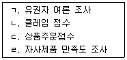
- ㄱ, ㄴ
- ㄱ, ㄹ
- ㄴ, ㄷ
- ㄷ, ㄹ
(정답률: 84%)
4. 시장세분화의 이점으로 볼 수 없는 것은?
- 마케팅 믹스를 보다 효과적으로 조합할 수 있다.
- 시장수요의 변화에 보다 신속하게 대처할 수 있다.
- 다양한 특성을 지닌 전체 시장의 욕구를 모두 충족시킬 수 있다.
- 세분시장의 욕구에 맞는 시장기회를 보다 쉽게 찾아낼 수 있다.
(정답률: 80%)
5. 판매촉진이 다른 커뮤니케이션 수단에 비해 더 많은 비중을 차지하는 이유로 볼 수 없는 것은?
- 광고와 달리 판매촉진은 매출에 즉각적인 영향을 미치기 때문이다.
- 판매촉진은 구매 관련 위험을 줄이는 가장 효율적인 수단이기 때문이다.
- 상표의 종류가 많아지고 제품들 간의 등가성이 증가하고 있기 때문이다.
- 많은 광고에 노출된 소비자들은 각각의 광고를 기억하기가 어렵기 때문이다.
(정답률: 62%)
6. 콜센터 내 여러 직원에게 골고루 전화가 배분되도록 분배해주는 장치는?
- ACD
- ARS
- ANI
- ACRDM
(정답률: 65%)
7. 다음이 설명하는 표적시장 선정 전략은?
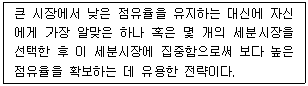
- 순차적 마케팅
- 차별화 마케팅
- 집중화 마케팅
- 비차별화 마케팅
(정답률: 81%)
8. 아웃바운드 판매 전략의 특성에 대한 설명으로 옳지 않은 것은?
- 아웃바운드에서는 고객리스트가 반응률에 영향을 미친다.
- 아웃바운드에서는 고객에게 전화를 건다는 측면에서 소극적, 방어적 마케팅이다.
- 아웃바운드에서 데이터베이스마케팅기법을 활용하면 더욱 효과가 증대된다.
- 아웃바운드는 마케팅전략이나 통화기법 등의 노하우, 텔레마케터의 자질 등에 큰 영향을 받는다.
(정답률: 87%)
9. 제품 포지셔닝(positioning)에 대한 내용으로 옳지 않은 것은?
- 한번 정한 포지셔닝은 바꿀 수 없다.
- 포지셔닝 맵을 사용하여 분석할 수 있다.
- 경영자로 하여금 신제품 개발 및 광고 활동에 있어서 방향성을 제시해 줄 수 있다.
- 기업이 시장세분화를 기초로 정해진 표적시장 내 고객들의 마음속에 전략적 위치를 계획하는 것을 말한다.
(정답률: 88%)
10. 고객반응분석의 기초자료로 주로 활용되며 여러 가지 프로모션을 실시했을 경우 그에 따른 고객들의 반응률을 나타내는 것은?
- Queue
- Response rate
- Order processing
- Call management system
(정답률: 73%)
11. 가격결정에 있어서 상대적으로 고가가격이 적합한 경우가 아닌 것은?
- 수요의 탄력성이 높을 때
- 규모의 경제효과를 통한 이득이 미미할 때
- 높은 품질로 새로운 소비자층을 유인하고자 할 때
- 진입장벽이 높아 경쟁기업이 자사 제품의 가격만큼 낮추기가 어려울 때
(정답률: 71%)
12. 소비자가 온라인, 오프라인, 모바일 등 다양한 경로를 통해 제품을 검색하고 구매할 수 있도록 각 유통채널의 특성을 통합한 채널 전략은?
- 옴니채널(omni channel)
- 멀티채널(multi channel)
- 직접채널(direct channel)
- 간접채널(indirect channel)
(정답률: 58%)
13. 제품을 판매하거나 서비스를 제공하는 과정에서 다른 제품이나 서비스에 대하여 판매를 유도하고 촉진시키는 마케팅 기법은?
- 재판매
- 교차판매
- 인적판매
- 이중판매
(정답률: 81%)
14. 텔레마케터에게 요구되는 판매기술로 볼 수 없는 것은?
- 고객의 목소리를 통해 고객의 심리를 파악할 수 있는 능력을 가져야 한다.
- 갑작스러운 접촉을 통해 상담이 진행되는 경우에도 차분하게 상담을 진행하는 능력을 가져야 한다.
- 시간제약(time constraint)이 방문판매 보다 심하기 때문에 제한된 시간 내에 마케팅을 진행할 수 있는 능력을 가져야 한다.
- 상담 중 판매관련 문헌(sales literature)의 동시 사용이 불가능하기 때문에 완벽히 제품에 관한 지식을 숙지해야 한다.
(정답률: 61%)
15. 제품의 가격결정 시 가장 일반적으로 쓰이는 방법으로, 제품 원재료의 가격에 일정 이익을 가산하여 가격을 결정하는 것은?
- 편습적 가격결정법
- 원가가산 가격결정법
- 경쟁입찰 가격결정법
- 투자수익률기준 가격결정법
(정답률: 87%)
16. 해피콜에 대한 설명으로 옳지 않은 것은?
- 고객과의 관계 개선을 통해 추가판매를 유도하고 고객만족도를 높여 충성 고객화 한다.
- 감사 전화, 서비스 만족확인 전화, 캠페인지지 전화 등이 이에 해당한다.
- 해피콜의 지속적인 운영관리를 위해 대상 데이터베이스를 유지하도록 한다.
- 해피콜은 소비자와의 최종 커뮤니케이션 단계로 해피콜 이후의 조치사항은 특별히 필요 없다.
(정답률: 85%)
17. 중간상은 생산자와 사용자 사이에서 다양한 효용을 창출한다. 다음 중 중간상이 창출해 내는 효용에 관한 설명으로 옳지 않은 것은?
- 소유효용(possession utility) : 생산자로 하여금 상품과 서비스를 소유할 수 있도록 도와주는 활동
- 시간효용(time utility) :소비자가 원하는 시기에 언제든지 상품을 구매할 수 있는 편의를 제공하는 것
- 장소효용(place utility) : 소비자가 어디에서나 원하는 장소에서 상품이나 서비스를 구입 할 수 있게 하는 것
- 형태효용(form utility) : 상품과 서비스를 고객에게 조금 더 매력 있게 보이기 위해 그 형태 및 모양을 변형시키는 활동
(정답률: 53%)
18. 마케팅정보시스템의 구성요소 중 마케팅 인텔리전스시스템에 관한 설명으로 옳지 않은 것은?
- 기업 내부에서 일어나고 있는 현상에 관한 자료를 공급하는 것을 목적으로 한다.
- 양질의 정보를 모으기 위해서 정보제공자(판매자, 유통업자 등)들에게 훈련 및 동기를 부여하는 것이 중요하다.
- 변화하는 시장(산업)환경에 대한 정보를 입수하는 절차와 이러한 정보를 제공하는 정보원에 대한 시스템을 말한다.
- 마케팅관리자가 신문, 잡지, 통계 등을 통해 자사와 자사가 속한 시장, 산업에 대한 정보를 모으는 것도 마케팅인텔리전스 시스템 활동이다.
(정답률: 57%)
19. 외부 환경 및 기업 내부로부터 정보를 수집, 처리하여 기업이 환경변화에 적절히 대응할 수 있도록 컴퓨터에 기반을 둔 데이터베이스, 의사결정 도구와 모델로 이루어진 시스템은?
- 내부정보시스템
- 마케팅조사시스템
- 마케팅인텔리전스시스템
- 마케팅의사결정지원시스템
(정답률: 59%)
20. 마케팅 믹스(marketing mix)의 4P에 해당하지 않는 것은?
- 가격(Price)
- 제품(Product)
- 과정(Process)
- 판매촉진(Promotion)
(정답률: 79%)
21. 다음 설명이 나타내는 서비스의 특성은?
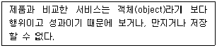
- 소멸성
- 이질성
- 무형성
- 생산과 소비의 동시성
(정답률: 84%)
22. 시장점유율이 높은 상위의 기업체들이 제품의 가격을 올리거나 내리게 되면 다른 기업체들도 이에 따라 가격을 결정하는 전략은?
- 선도가격전략
- 특별가격전략
- 품위가격전략
- 서수가격전략
(정답률: 85%)
23. 포지셔닝 전략을 개발하기 위한 기업 내부의 분석정보가 아닌 것은?
- 성장률
- 인적자원
- 시장점유율
- 기술상의 노하우
(정답률: 53%)
24. 시장세분화의 기준 중 추구하는 편익, 상표충성도, 가격민감도 등의 변수를 지니는 것은?
- 지리적 변수
- 인구통계적 변수
- 심리분석적 변수
- 행동분석적 변수
(정답률: 46%)
25. 소비자가 제품 구매 후 우편으로 영수증을 비롯한 필요한 증명서를 기업에게 보내면 기업이 구매가격의 일정률에 해당하는 현금을 반환해주는 것을 말하는 판매촉진 수단은?
- 리베이트
- 프리미엄
- 가격할인쿠폰
- 마일리지 서비스
(정답률: 75%)
2과목: 시장조사
26. 자료의 성격에 따라 1차 자료와 2차 자료로 구분할 때 2차 자료에 해당하는 것은?
- 원 자료(Raw data)
- 현장자료(Field data)
- 실사자료(Survey data)
- 신디케이트 자료(Syndicated data)
(정답률: 73%)
27. 다음 설명에 가장 적합한 조사유형은?
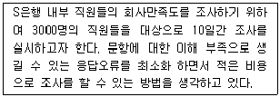
- 면접조사
- 방문조사
- 관찰조사
- 집단설문조사
(정답률: 74%)
28. 사전조사에 대한 설명으로 옳지 않은 것은?
- 본 조사에 앞서 조사방법과 조사과정이 적절한지 등을 검토하기 위하여 실시한다.
- 마케팅 문제에 대한 사전정보가 적은 경우 전반적인 환경을 파악하기 위한 탐색적인 방법이다.
- 사전조사는 본 조사에서 오차를 줄일 수 있도록 본 조사의 50% 정도의 규모로 실시하는 경우가 많다.
- 표본설계에서 표본크기를 정하고자 할 때 모분산을 모르는 경우에 이를 추정하기 위해서 실시한다.
(정답률: 54%)
29. 표본추출법을 결정한 후 표본크기를 결정할 때 고려해야할 사항으로 옳지 않은 것은?
- 조사자가 표본을 통해 얻은 통계량에 대해 표본오류가 적길 원한다면 표본의 크기를 크게 한다.
- 조사자가 통계량을 바탕으로 추정한 신뢰 구간에 보다 확신, 신뢰를 갖길 원할 때 표본의 크기를 크게 한다.
- 표본의 크기가 커질수록 시간과 비용이 상승하게 되므로 조사에서 사용 가능한 예산 범위를 고려하여 표본의 크기를 정해야 한다.
- 조사자가 밝히고자 하는 모수에 대한 모집단 내 차이가 미비하고 유사한 특징을 보인다면 표본의 크기를 크게 하여 정확성을 높인다.
(정답률: 47%)
30. 시장조사에 활용되는 측정척도에 대한 설명으로 옳지 않은 것은?
- 서열척도는 순서(순위, 등급)에 대한 정보를 포함하는 자료이다.
- 비율척도는 모든 산술계산이 가능하며 절대영점이 존재하지 않는 유일한 척도이다.
- 등간척도는 명목자료와 서열자료에 포함된 정보와 측정값 간의 양적 차이에 관한 정보를 포함한다.
- 명목척도는 숫자에 의해 양적인 개념이 전혀 내포되어 있지 않으며 단지 확인과 분류에 관한 정보만을 내포한다.
(정답률: 53%)
31. 마케팅 조사를 수행하기 위한 첫 번째 단계는?
- 현재 당면하고 있는 문제를 파악하여야 한다.
- 조사의 결론이 왜 그렇게 되었는가의 원인을 규명한다.
- 조사에서 채택된 가설을 엄격하게 검증하여야 한다.
- 과거 연구 성과나 이론으로부터 유도된 가설이나 리서치 설계를 활용한다.
(정답률: 78%)
32. 자료를 수집할 때 의사소통방법을 이용한 것이 아닌 것은?
- 관찰법
- 대인면접법
- 전화면접법
- 우편면접법
(정답률: 69%)
33. 다음 ( )에 들어갈 알맞은 용어는?
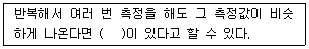
- 신뢰성
- 타당성
- 민감성
- 선별성
(정답률: 73%)
34. 비확률표본추출방법에 해당하는 것은?
- 편의표본추출법
- 층화표본추출법
- 군집표본추출법
- 단순무작위표본추출법
(정답률: 60%)
35. 면접조사 방법과 비교한 전화조사 방법의 장점으로 틀린 것은?
- 전화조사 방법은 면접조사 방법에 비해 시간과 비용을 절약할 수 있다.
- 면접원을 용무가 없는 사람으로 생각하고 방문을 금지하는 경우가 있지만 전화는 이러한 상황을 극복할 수 있다.
- 면접조사는 면접원들이 조사결과에 영향을 미쳐 각각 다른 결과를 가져올 수 있으나 전화조사는 그럴 위험이 비교적 적다.
- 전화조사는 면접조사보다 응답자가 긴 시간을 할애할 수 있어 구체적이고 자세한 조사를 할 수 있다.
(정답률: 71%)
36. 다음 설문을 보고 연구자가 고려해야 할 사항은?
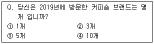
- 응답 항목들 간의 내용이 중복되어서는 안된다.
- 응답자에게 지나치게 자세한 응답을 요구해서는 안된다.
- 응답자가 대답하기 곤란할 질문들에 대해서는 직접적인 질문을 피하도록 한다.
- 응답자가 응답할 수 있는 모든 경우의 수를 고려하여야 한다.
(정답률: 70%)
37. 다음 2차 자료의 종류 중 내부자료(internal data)는?
- 정부기관 발행물
- 기업 내 회계자료
- 민간 연구소 연구자료
- 국책 연구소 간행 자료
(정답률: 79%)
38. 총 학생 수가 2000명인 학교에서 800명을 표집할 때의 표집률은?
- 20%
- 40%
- 80%
- 100%
(정답률: 77%)
39. 다음 중 대구, 부산, 전주에 있는 주부들을 대상으로 자주 이용하는 대형마트를 단기간 내 조사 완료해야 할 때 가장 적합한 자료수집방법은?
- 방문조사
- 면접조사
- 전화조사
- 관찰조사
(정답률: 74%)
40. 확률표본추출방법과 비교한 비확률표본 추출방법의 특징으로 볼 수 없는 것은?
- 시간과 비용이 적게 든다.
- 표본오차의 추정이 가능하다.
- 인위적 표본추출이 가능하다.
- 연구대상이 표본으로 추출될 확률이 알려져 있지 않다.
(정답률: 58%)
41. 우편조사법의 특징으로 옳지 않은 것은?
- 대인면접법에 비해 비용이 많이 든다.
- 지역에 제한 받지 않고 조사가 가능하다.
- 대인면접법보다 상대적으로 응답률이 낮다.
- 전화조사법에 비해 자료수집기간이 길다.
(정답률: 79%)
42. 다음 사례의 조사유형으로 가장 적합한 것은?
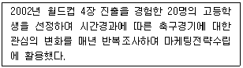
- 횡단조사
- 추세조사
- 코호트조사
- 패널조사
(정답률: 41%)
43. 시장조사의 역할로 옳지 않은 것은?
- 의사결정능력 제고
- 기업지향적 경영활동 지원
- 문제해결을 위한 조직적 탐색
- 고객의 심리적, 행동적인 특성 파악
(정답률: 58%)
44. 다음 중 우편조사 시 설문지의 회수율을 높일 수 있는 방법과 거리가 먼 것은?
- 설문 조사에 대한 참여를 극대화하기 위해 대중매체를 이용하여 홍보를 지속적으로 한다.
- 설문지 응답자 중 추첨을 통해 선물을 보내드린다는 사실을 적어서 설문지와 함께 보낸다.
- 설문 내용에 하나라도 체크가 되지 않은 부분이 있다면 응답자에게 다시 발송됨을 설문지에 명기한다.
- 설문지를 다 작성하여 우편을 보낸 모든 응답자에게 관할 지역에서 제공하는 편의시설 이용권을 발송 해 준다.
(정답률: 76%)
45. 모집단으로부터 매 k번째 표본을 추출해 내는 표집방법은?
- 군집표본추출법(cluster sampling)
- 편의표본추출법(convenience sampling)
- 계통표본추출법(systematic sampling)
- 단순무작위표본추출법(simple random sampling)
(정답률: 50%)
46. 측정의 신뢰성을 높이는 방법에 대한 설명으로 옳지 않은 것은?
- 측정항목의 모호성을 제거한다.
- 동일한 개념이나 속성의 측정항목 수를 줄인다.
- 중요한 질문의 경우 동일하거나 유사한 질문을 2회 이상 한다.
- 조사대상자가 잘 모르거나 전혀 관심이 없는 내용은 측정하지 않는다.
(정답률: 46%)
47. 응답자에 대해 조사자가 지켜야 할 사항으로 옳지 않은 것은?
- 조사를 통해 모아진 응답자들의 개인 자료를 함부로 사용하거나 공개해서는 안된다.
- 응답자가 조사에 참여하는 동안 신체적, 심리적으로 해로운 상황이 없도록 해야 한다.
- 조사자는 응답자에게 조사 참여 여부를 강요하지 않고 응답자가 스스로 결정하도록 해야 한다.
- 특수성이 있는 경우 응답자가 참여하는 조사 목적, 정보를 제공받는 곳 등의 내용을 알려주지 않아도 된다.
(정답률: 80%)
48. 설문지의 외형 결정에 관한 설명으로 옳지 않은 것은?
- 설문지의 관리를 쉽게 할 수 있도록 외형을 결정하여야 한다.
- 응답자가 작성하는 경우에는 응답하기 쉽도록 문항을 배치하고 시각적인 효과를 고려하여 여백을 아주 적게 두는 것이 좋다.
- 응답자들이 설문지를 중요한 것으로 인지하여 자발적인 협조를 할 수 있도록 설문지의 형태를 결정하여야 한다.
- 응답자의 기록이 조사자에 의해 이루어지는지, 응답자가 직접 기록하는지에 따라서도 설문지의 형태는 차이가 나게 된다.
(정답률: 71%)
49. 다음 중 일반적인 설문지 작성과정을 순서대로 나열한 것은?
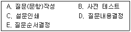
- A ＞ B ＞ C ＞ E ＞ D
- B ＞ A ＞ E ＞ D ＞ C
- C ＞ E ＞ D ＞ A ＞ B
- D ＞ A ＞ E ＞ B ＞ C
(정답률: 75%)
50. 다음 ( )에 알맞은 탐색조사의 종류는?
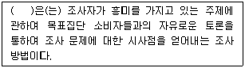
- 사례조사
- 횡단조사
- 전문가의견조사
- 표적집단면접법
(정답률: 70%)
3과목: 텔레마케팅관리
51. 임금을 임금형태와 임금체계로 나눌 때 임금체계에 따른 분류에 해당하지 않는 것은?
- 연공급
- 시간급
- 직무급
- 직능급
(정답률: 52%)
52. 피들러(Fidler)의 상황리더십이론에서 제시한 상황호의성 변수로 볼 수 없는 것은?
- 과업구조
- 지위권력
- 구성원의 성숙도
- 리더와 구성원과의 관계
(정답률: 38%)
53. 수행하고 있는 업무를 중심으로 콜센터를 구분하는 경우에 해당하지 않는 것은?
- 혼합형 콜센터
- 인바운드형 콜센터
- 아웃바운드형 콜센터
- CTI시스템 자동화 콜센터
(정답률: 64%)
54. 리더십의 유형을 의사결정 방식과 태도에 따라 구분할 때 의사결정 방식에 따른 구분이 아닌 것은?
- 독재형 리더십
- 민주형 리더십
- 직무중심형 리더십
- 자유방임형 리더십
(정답률: 61%)
55. 전통적인 마케팅과 비교하여 텔레마케팅이 지향하는 마케팅 전략으로 가장 적합한 것은?
- 판매 중심적 마케팅 전략
- 고객 중심적 마케팅 전략
- 제품 중심적 마케팅 전략
- 기업 중심적 마케팅 전략
(정답률: 77%)
56. 다음에서 설명하고 있는 텔레마케팅의 유형과 대상의 관계가 올바르게 나열된 것은?
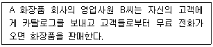
- 인바운드(Inbound), 기업 대 소비자(B to C)
- 인바운드(Inbound), 기업 대 기업(B to B)
- 아웃바운드(Outbound), 기업 대 소비자(B to C)
- 아웃바운드(Outbound), 기업 대 기업(B to B)
(정답률: 69%)
57. 텔레마케팅 조직의 특성과 가장 거리가 먼 것은?
- 타 부서와의 연계성이 낮다.
- 시스템의 운영능력이 필요하다.
- 성과분석이 실시간으로 가능하다.
- 반복되는 업무로 매너리즘에 빠지기쉽다.
(정답률: 67%)
58. 다음 중 일반적인 역할연기(role playing)의 진행 순서로 옳은 것은?
- 상황설정 ＞ 스크립트 및 매뉴얼 수정 ＞ 역할 내용의 평가 ＞ 연기 실시 ＞반복 훈련 및 효과상승 체크
- 상황 설정 ＞ 스크립트 및 매뉴얼 수정 ＞ 연기 실시 ＞ 역할 내용의 평가 ＞반복 훈련 및 효과상승 체크
- 상황 설정 ＞ 연기 실시 ＞ 역할내용의 평가 ＞ 반복훈련 및 효과 상승 체크 ＞스크립트 및 매뉴얼 수정
- 상황 설정 ＞연기 실시 ＞ 역할내용의 평가 ＞ 스크립트 및 매뉴얼 수정 ＞반복훈련 및 효과 상승 체크
(정답률: 55%)
59. 콜센터 업무의 세분화, 전문화로 인해 전체 과업이 분화되면 능률 도모를 위해 관련된 과업을 모아 수평적으로 그룹을 형성하는 콜센터 조직설계의 기본과정은?
- 일반화
- 부문화
- 조직도
- 집권화
(정답률: 45%)
60. 신입 텔레마케터를 선발 할 때 사용되는 인사선발도구와 가장 거리가 먼 것은?
- 인성검사
- 적성검사
- 학력평가
- 인지능력검사
(정답률: 78%)
61. 콜센터 문화에 영향을 미치는 기업적 요인에 해당되지 않는 것은?
- 근로 급여조건
- 기업의 지명도
- 상담원에 대한 직업의 매력도
- 상담원과 슈퍼바이저의 인간적 친밀감
(정답률: 34%)
62. 상담원의 보상계획 수립 시 고려해야 할 사항으로 가장 거리가 먼 것은?
- 동종 업계 벤치마킹 및 산업평균을 최우선 반영한다.
- 급여 계획과 인센티브 정책 마련 시 직원을 참여시킨다.
- 금전적 보상과 비금전적 보상을 적절한 비율로 설정한다.
- 정확하고 객관적으로 측정된 성과분석 자료를 활용한다.
(정답률: 66%)
63. 콜센터의 효율적 운영방안과 가장 거리가 먼 것은?
- 고객상담을 종합적으로 처리할 수 있는 전문 인력을 배치한다.
- 고객의 특수한 요구 발생 시 스스로 판단하여 처리하도록 한다.
- 고객이 요구하는 사항은 가능한 원스톱(one-stop)으로 처리하는 것을 지향한다.
- 고객위주의 상담 스크립트를 개발하고 상담 내용을 데이터베이스화 하여 경영활동에 반영한다.
(정답률: 75%)
64. 콜센터의 조직구성원 중 텔레마케터에 대한 교육훈련 및 성과관리 업무를 주로 수행하는 사람은?
- 센터장
- OJT 담당자
- 슈퍼바이저
- 통화품질관리자
(정답률: 55%)
65. 콜센터에서 재택근무자를 운영할 경우의 장점이 아닌 것은?
- 직원 관리가 용이하다.
- 설비비용을 절약할 수 있다.
- 우수 직원을 유인하고 유지할 수 있다.
- 기상악화 등으로 인한 위험 요소를 감소 시킨다.
(정답률: 68%)
66. 콜센터 리더의 역할로 볼 수 없는 것은?
- 상호신뢰감 구축
- 원활한 의사소통
- 각 직무별 촉매자
- 독재적 리더십 발휘
(정답률: 78%)
67. 다음에서 설명하는 콜센터 리더의 유형은?
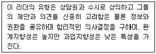
- 지시형 리더(directive leader)
- 위양형 리더(delegating leader)
- 참가형 리더(participative leader)
- 성취지향형 리더(achievement-oriented leader)
(정답률: 55%)
68. C통신사에서는 신규제품의 홍보를 위한 DM 2000건을 발송하여 주문 32건, 문의 58건을 접수하였다. 이 경우 아웃바운드 콜센터의 CRR은 얼마인가?
- 1.6%
- 2.9%
- 3.2%
- 4.5%
(정답률: 49%)
69. 조직의 성과관리를 위한 개인평가방법을 상사평가방식과 다면평가방식으로 구분할 때 상사평가방식의 특징으로 볼 수 없는 것은?
- 상사의 책임감 강화
- 간편한 작업 난이도
- 평가결과의 공정성 확보
- 중심화, 관대화 오류발생 가능성
(정답률: 46%)
70. 콜센터 상담사나 각 팀별 성과향상을 위한 활동으로 적합하지 않은 것은?
- 개인, 팀별로 적절한 동기부여를 시킬 수 있는 프로그램을 운영한다.
- 성과 측정시 공정성과 객관성을 유지하도록 최대한 노력한다.
- 합리적인 급여체계를 구축하여 근무 집중도를 향상시키고 이직률을 낮추어야한다.
- 교통이 혼잡하지 않은 시외 지역에 사무실을 두고 쾌적한 근무 환경을 제공한다.
(정답률: 76%)
71. 다음 중 콜센터 관리자에게 요구되는 자질과 가장 거리가 먼 것은?
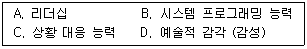
- A, C
- B, D
- B, C
- A, B
(정답률: 63%)
72. 상담원 코칭 시 관리자가 지켜야 할 올바른 태도로 볼 수 없는 것은?
- 코칭 시작 시 상담원과 친밀감 형성을 먼저 한다.
- 장점에 대한 칭찬을 곁들이면서 문제점에 대한 지적을 하고 동의를 구한다.
- 문제 코칭사항에 대해 상담원의 의견을 듣기보다 해결책을 바로 제시해준다.
- 문제점의 지적과 함께 개선 방안에 대해 제시하거나 토의한다.
(정답률: 77%)
73. 서비스의 전략적인 측면에서 본 콜센터의 역할로 옳지 않은 것은?
- 서비스 및 고객 니즈를 정확히 이해하고 이에 대해 피드백을 줄 수 있어야 한다.
- 콜센터는 철저한 서비스 실행 조직으로서 기업 전체에 미칠 영향을 중요시해야 한다.
- 고객에게 신속한 서비스를 제공하기 위해서 커뮤니케이션 채널을 단순화시켜야 한다.
- 기업의 서비스 전략을 효과적으로 수행하기 위한 콜센터 성과지표(KPI)를 가지고 있어야 한다.
(정답률: 62%)
74. 텔레마케팅 조직구성원의 역할이 잘못 연결된 것은?
- 교육담당자 - 텔레마케터의 경력개발을 위한 교육 프로그램을 개발한다.
- 모니터링담당자 - 텔레마케터가 고객과 통화한 내용을 분석한다.
- 시스템담당자 - 텔레마케터가 효율적으로 업무를 할 수 있도록 스크립트를 개발한다.
- 슈퍼바이저 - 텔레마케터의 스케줄을 관리한다.
(정답률: 55%)
75. 콜센터의 역할 및 기능과 가장 거리가 먼 것은?
- 비용절감
- 수익증대
- 고객관리
- 고객정보 분산
(정답률: 72%)
4과목: 고객응대
76. 다음 ( )에 들어갈 알맞은 것은?
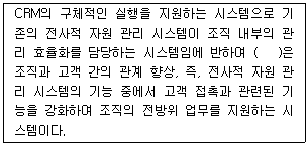
- 운영 CRM
- 협업 CRM
- e-CRM
- 분석 CRM
(정답률: 45%)
77. 면대면 고객 응대 시 비언어적인 긍정적 행동 단서가 아닌 것은?
- 미소 짓기
- 짧게 직접 눈 마주치기
- 소비자와 대화 시 고개를 끄덕이기
- 소비자에게 손가락 또는 물건으로 지적하기
(정답률: 81%)
78. 다음 중 커뮤니케이션의 원칙과 가장 거리가 먼 것은?
- 지속성
- 명료성
- 신뢰성
- 표현, 전달 내용의 다양성
(정답률: 47%)
79. 우유부단한 소비자를 상담하는 전략과 가장 거리가 먼 것은?
- 폐쇄형 질문을 많이 한다.
- 의사결정 과정을 안내한다.
- 선택할 수 있는 대안을 제시한다.
- 인내심을 가지고 차분히 안내한다.
(정답률: 63%)
80. 콜센터에서의 우량고객에 대한 고객관리 방법으로 옳지 않은 것은?
- 우량고객 전담 상담원을 두어 고객응대를 한다.
- ARS를 거치지 않고 상담원과 바로 연결되도록 한다.
- 우량고객에 대해서는 장시간 장황하고 세밀하게 응대한다.
- 우량고객에 해당하는 별도의 혜택을 제공한다.
(정답률: 66%)
81. 다음 중 의사전달을 위한 표현방법에 대한 설명으로 옳지 않은 것은?
- “잔디밭에 들어가지 마시오.”는 부정형 표현방법이다.
- “실내에서 조용히 해 주시겠습니까?”는 청유형 표현방법이다.
- “서류를 가져와야 합니다.”는 감탄형 표현방법이다.
- “옆 계단에서 담배를 피울 수 있습니다. 담배는 그곳에서 부탁드립니다.”는 긍정형 표현방법이다.
(정답률: 80%)
82. 호감가는 음성의 조건과 가장 거리가 먼 것은?
- 비음
- 억양
- 속도
- 목소리
(정답률: 77%)
83. 기업측면에서 본 고객 로열티에 의한 효과로 옳지 않은 것은?
- 수익 증대
- 우량고객 확보
- 비용의 절감
- 삶의 질 향상
(정답률: 68%)
84. 고객 응대에 있어서 MOT(Moments Of Truth, 결정적 순간, 진실의 순간)의 의미로 가장 적합한 것은?
- 고객이 만족할 만한 응대가 끝난 시점
- 고객이 제품을 구매하여 처음 사용해 보는 순간
- 고객과 기업이 상호 접촉하여 커뮤니케이션을 하는 매 순간
- 고객이 제품 사용을 통해 제품의 장,단점을 실제로 깨닫는 순간
(정답률: 52%)
85. 고객관계관리(CRM : Customer Relationship Management)를 위한 필요사항이 아닌 것은?
- 고객통합데이터베이스 구축
- 데이터베이스 마케팅의 기능 축소
- 고객특성 분석을 위한 데이터마이닝 도구 준비
- 마케팅 활동 대비를 위한 캠페인 관리용 도구 필요
(정답률: 72%)
86. 상담 화법에 대한 설명으로 옳지 않은 것은?
- 상담 화법은 의사소통의 과정이다.
- 말하기의 대부분은 음성언어로 이루어 진다.
- 상담 화법은 대인 커뮤니케이션과 밀접한 상관관계를 지니고 있다.
- 상담 화법은 대화상대, 대화목적에 따라 변화되지 않아야 한다.
(정답률: 75%)
87. 고객 불만처리의 중요성에 대한 설명으로 옳지 않은 것은?
- 기업의 좋은 이미지를 구축할 수 있다.
- 경영에 대한 유용한 정보를 얻게 된다.
- 고객 불만의 해결은 기업이윤을 감소시킨다.
- 고객 불만을 잘 처리하면 고객유지율이 향상된다.
(정답률: 78%)
88. 스트레스 관리에 대한 설명으로 옳지 않은 것은?
- 자신의 스트레스 수준을 아는 것이다.
- 스트레스를 극복하기 위한 대처 방식이다.
- 자신의 스트레스 증상을 알고 스스로 조절한다.
- 고객의 스트레스 누적상태를 파악하는 것이 주 목적이다.
(정답률: 72%)
89. 소비자의 욕구가 다양해지고 기업 간의 경쟁이 치열하기 때문에 고객만족 경영이 필수적이 되었다. 이러한 경영 환경의 변화에 관한 설명으로 틀린 것은?
- 산업화 사회에서 정보화 사회로 변하였다.
- 시장의 중심이 소비자에서 생산자로 변하였다.
- 규모의 경제에 따른 경쟁에서 부가가치로 변하였다.
- 소비자 요구가 소유 개념에서 개성 개념으로 변하였다.
(정답률: 76%)
90. CRM(고객관계관리)에 대한 설명으로 옳지 않은 것은?
- 고객유지보다는 고객획득에 중점을 둔다.
- 시장점유율보다 고객점유율에 비중을 둔다.
- 제품판매보다는 고객관계관리에 중점을 둔다.
- 고객로열티 극대화를 중시한다.
(정답률: 74%)
91. 고객 유형 중 '유아독존형' 고객에게 가장 효과적인 응대방법은?
- 여유있게 설명한다.
- 체면과 프라이드를 높여준다.
- 묻는 말에 대답하고 의사를 존중한다.
- 천천히 부드러우며 조용한 목소리로 응대한다.
(정답률: 44%)
92. 기업의 CRM 전략 수행에 있어서 콜센터가 중심적 역할을 수행하게 된 배경으로 적절하지 않은 것은?
- 일대일(1:1) 마케팅 기법이 발달되었다.
- 고객데이터나 관련 데이터를 과학적인 분석기법으로 처리가 가능해졌다.
- 정보나 영업지식을 영업부서 내에서만 활용하도록 변화되었다.
- 마케팅 자동화, 또는 SFA(Sales Force Automation)를 할 수 있게 되어 영업 비용을 줄일 수 있게 되었다.
(정답률: 74%)
93. 제품에 불만족한 소비자를 상담할 시 필요한 상담처리 기술로 옳지 않은 것은?
- 참을성 있게 공감적 경청을 한다.
- 차분하게 목소리를 상대적으로 낮추어 응대한다.
- 가능한 문제해결을 위해 최선을 다하고 있음을 전한다.
- 형사 고발 등 법적으로 대응하겠다는 엄포를 놓아 강경 응대한다.
(정답률: 78%)
94. CRM의 기본 분류 방법 중 프로세스 관점에 따른 분류가 아닌 것은?
- 분석 CRM
- 운영 CRM
- 협업 CRM
- 브랜드 CRM
(정답률: 73%)
95. 고객의사결정 단계별 상담에서 구매 전 상담에 해당하는 것은?
- 상품 유통 후 혹시 발생할 지도 모르는 고객의 불만을 사전에 예방하는 차원에서의 상담
- 소비자가 재화와 서비스를 사용하고 이용하는 과정에서 고객의 욕구와 기대에 어긋 났을 때 발생하는 모든 일들을 도와주는 상담
- 재화와 서비스의 사용에 관한 정보 제공, 소비자의 불만 및 피해구제, 이를 통한 소비자의 의견 반영 등에 관한 상담
- 제품이나 서비스의 매출 증대를 위해 텔레마케팅 시스템을 도입하여 소비자에게 구매에 관한 정보와 조언을 제공하는 상담
(정답률: 60%)
96. 고객접점별로 고객이 느끼는 정신적, 육체적 상황을 의미하는 용어는?
- CPA(Call Progress Analysis)
- CSP(Customer Situation Performance)
- CSR(Customer Service Representative)
- CAT(Computer Assisted Telemarketing)
(정답률: 61%)
97. 고객이 가지고 있는 경계심과 망설임을 없애는 방법과 가장 거리가 먼 것은?
- 고객의 자발적인 참여를 유도한다.
- 고객에게 객관적인 자료를 제시한다.
- 고객에게 업무중심의 고객응대를 한다.
- 고객에게 타사와의 비교분석에 대해 설명한다.
(정답률: 70%)
98. 매슬로우 (Maslow)의 욕구 5단계 중 생리적 욕구에 대한 설명으로 옳은 것은?
- 생활의 안정, 신체적인 안정, 생명의 안전, 자신의 직책상의 안정을 추구한다.
- 친화의 욕구, 애정의 욕구, 소속의 욕구 등으로 표현하기도 한다.
- 좋은 직업을 갖기 위해 남보다 더 열심히 공부하거나, 봉급과 수당을 많이 받기 위해 더 열심히 일한다.
- 상대방의 불만이나 불평의 말을 우선 상대방의 입장에서 인정해 주고 객관적 입장에서 회사의 입장을 이해시키는 것이 필요하다.
(정답률: 26%)
99. 다음 중 텔레마케팅에서 상대적으로 중요도가 가장 낮은 대화 요소는?
- 감성 화법
- 시각적인 요소
- 목소리 음색과 톤
- 사용하는 단어와 문장
(정답률: 74%)
100. 설득 커뮤니케이션에 대한 설명으로 옳지 않은 것은?
- 어떤 목표를 달성하기 위하여 수용자들에게 의도된 행동을 유발시키는 역동적 과정이다.
- 설득이란 다른 사람의 의지를 유발시키기 위해 감성에 이성을 결부시키는 수단이다.
- 누가, 무엇을, 어떤 매체를 통하여, 누구에게 말하여, 어떤 효과를 얻는가를 고려하면 효과적이다.
- 설득 커뮤니케이션은 PR 커뮤니케이션의 하위 개념이며 광고를 통해 의사전달을 한다.
(정답률: 56%)